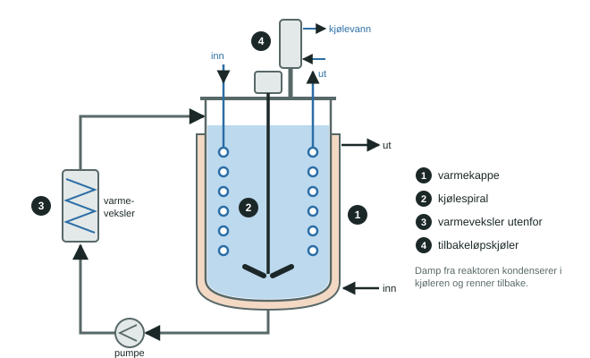

Oppvarming og kjøling av reaktorer
Temperaturen er det viktigste du følger med på i en reaktor. Er det for kaldt, går reaksjonen for sakte. Er det for varmt, kan du få feil produkt, eller i verste fall en reaksjon som løper løpsk. Her lærer du hvordan en reaktor varmes og kjøles.
Hvorfor må reaktoren varmes eller kjøles?
Reaksjoner gir fra seg eller tar opp varme:
- En eksoterm reaksjon gir fra seg varme. Reaktoren må kjøles, ellers blir det stadig varmere. Mange viktige reaksjoner i industrien er eksoterme.
- En endoterm reaksjon tar opp varme. Reaktoren må varmes, ellers blir det kaldere, og reaksjonen går saktere og saktere.
Du lærer mer om dette på siden Energi i reaksjoner i Kjemiske prinsipper. I tillegg må en batchreaktor ofte varmes opp før reaksjonen starter, og kjøles ned før den tømmes.
Fire måter å varme og kjøle en reaktor

1. Varmekappe
En varmekappe er en ekstra vegg utenpå reaktoren. I mellomrommet strømmer et varme- eller kjølemedium, for eksempel damp eller kjølevann. Varmen går gjennom reaktorveggen, fra det varme til det kalde. Kappen kalles også bare kappe eller kjølekappe. Ordet kappe brukes også om den ytre sylinderen i en rørkjelvarmeveksler.
Kjølevannet går vanligvis inn nederst og ut øverst, slik at kappen blir helt full av vann. Damp går inn øverst, og kondensatet går ut nederst gjennom en kondenspotte, slik du lærte på siden Kjøling og kondensering.
En vanlig variant er halvrørskappe. Da er et rør som er delt på langs, sveiset fast i en spiral utenpå reaktoren. Mediet strømmer fort gjennom den smale kanalen og tar opp mye varme. Halvrørskappen tåler også høyere trykk enn en vanlig kappe.
Kappen dekker veggene og bunnen opp til en viss høyde. Varmen kan bare gå inn eller ut der væsken i reaktoren ligger mot kappen. Når nivået er lavt, blir kjølingen dårligere.
2. Kjølespiral
En kjølespiral er et rør som går i spiral inne i reaktoren. Kjølevann eller damp strømmer gjennom røret. Spiralen gir mer varmeflate enn kappen alene, og den står midt i væsken. Ulempen er at den er vanskelig å rengjøre, at den kan hindre omrøringen, og at en lekkasje slipper kjølevann rett inn i produktet. Når spiralen brukes til oppvarming, kalles den en varmespiral.
3. Varmeveksler utenfor reaktoren
En pumpe tar væske fra bunnen av reaktoren, sender den gjennom en varmeveksler og tilbake inn i reaktoren. Varmeveksleren kan være så stor som det trengs, så denne løsningen gir mest kjøling. Den brukes på store reaktorer og ved reaksjoner som lager mye varme. Pumpen må gå hele tiden. Stopper den, stopper også kjølingen.
4. Kondensator på toppen
Noen reaktorer går ved kokepunktet til væsken. Da koker litt av væsken bort og tar med seg mye varme, fordi det trengs mye energi for å få en væske til å fordampe. Dampen går opp i en tilbakeløpskjøler, en kondensator på toppen av reaktoren. Der blir den til væske igjen og renner tilbake. Slik holdes temperaturen ved kokepunktet, og nesten ingen væske går tapt.
Varme- og kjølemedier
| Medium | Brukes til | Kommentar |
|---|---|---|
| Damp | Oppvarming, vanligvis opp til rundt 200 °C | Gir mye varme når den kondenserer. Temperaturen styres med trykket. |
| Varmt vann | Skånsom oppvarming under 100 °C | Jevn temperatur, mindre fare for at produktet blir brent fast på veggen. |
| Varmeolje | Oppvarming til høye temperaturer, ofte 200–300 °C | Koker ikke og gir derfor ikke høyt trykk i kappen, slik damp ville gjort ved så høy temperatur. Kan brenne ved lekkasje. |
| Kjølevann | Kjøling ned mot temperaturen på vannet | Det vanligste kjølemediet. Se Kjøling og kondensering. |
| Kuldebærer fra kjølemaskin | Kjøling under temperaturen på kjølevannet, også under 0 °C | Ofte en blanding av vann og glykol som ikke fryser ved 0 °C. Kjøles i en kjølemaskin. |
Mange batchreaktorer både varmes og kjøles i den samme kappen. Da brukes ofte ett medium, for eksempel vann eller varmeolje, som sirkulerer i en krets. Mediet varmes eller kjøles i varmevekslere utenfor reaktoren, etter hva reaktoren trenger.
Hva bestemmer hvor mye varme som går gjennom?
Varme går alltid fra det varme til det kalde. Hvor mye varme som går gjennom veggen, avhenger av:
- Varmeflaten: Større flate gir mer varmeoverføring.
- Temperaturforskjellen: Jo kaldere kjølemediet er i forhold til reaktoren, jo mer varme tar det opp.
- Omrøringen: Væsken ved veggen må skiftes ut hele tiden. Står omrøreren, blir væsken ved veggen kald mens resten av reaktoren blir varm.
- Rene flater: Belegg på veggen isolerer og gir mindre varmeoverføring.
Hvordan varme går gjennom en vegg, lærer du mer om på siden Temperatur og varme i Fysiske prinsipper.
Oppgave: Tenk deg to reaktorer formet som terninger (forenklet: vi regner som om hele overflaten kan kjøles). Den lille er 1 m på hver side, og den store er 2 m på hver side. Hvor mye overflate har de per kubikkmeter innhold?
Løsning:
- Den lille: Volumet er 1 m · 1 m · 1 m = 1 m³. Overflaten er 6 sider · 1 m² = 6 m². Det gir 6 m² / 1 m³ = 6 m² per m³.
- Den store: Volumet er 2 m · 2 m · 2 m = 8 m³. Overflaten er 6 sider · 4 m² = 24 m². Det gir 24 m² / 8 m³ = 3 m² per m³.
Svar: Den store reaktoren har bare halvparten så mye overflate per kubikkmeter. Varmen lages i hele volumet, men kan bare komme ut gjennom overflaten. Derfor er det vanskeligere å kjøle en stor reaktor. En reaksjon som går rolig i en kolbe på laben, kan bli farlig i en stor reaktor. Store reaktorer trenger derfor ofte kjølespiral eller varmeveksler i tillegg til kappen.
Temperaturen følges hele tiden
Temperaturen måles inne i reaktoren og ofte også i mediet inn og ut av kappen. En regulator åpner og stenger ventilen for damp eller kjølevann, slik at temperaturen holdes der den skal være. Hvordan dette virker, lærer du i Automasjon.
Som operatør følger du med på om temperaturen i reaktoren holder seg, og om kjølingen klarer å følge med. Står kjøleventilen helt åpen og temperaturen likevel stiger, er det et alvorlig varsel. Da har kjølingen ikke mer å gi. Kjølekapasiteten er brukt opp.
- Kjølesvikt og omrørerstans: Svikter kjølevannet, pumpen eller omrøreren i en reaktor med eksoterm reaksjon, kan temperaturen stige raskt. Stopp tilsetningen av råstoff med en gang, og følg nødprosedyren. Les om løpske reaksjoner og prøv simuleringen Øv: Reaktoren.
- Ikke start omrøreren uten videre: Har omrøreren stått mens råstoff ble tilsatt, kan stoffene ligge i lag uten å ha reagert. Starter omrøreren, kan alt reagere på en gang. Spør skiftleder og følg prosedyren før omrøreren startes igjen.
- Damp og varme flater: Damp, kondensat og kappen kan gi alvorlige brannskader. Slipp aldri damp inn i en kappe full av kaldt vann uten å tømme den først, for det kan gi kraftige slag i rørene, såkalt vannslag.
- Varmeolje: Varm olje som lekker ut, kan ta fyr. Lekkasjer skal meldes og stoppes.
- Brå temperaturendringer: Noen reaktorer er kledd med glass på innsiden for å tåle etsende stoffer. Glasset kan sprekke hvis reaktoren varmes eller kjøles for fort.
Test deg selv
1. En reaktor har en eksoterm reaksjon. Hva betyr det for reaktoren?
- Den må varmes hele tiden.
- Den må kjøles, fordi reaksjonen lager varme.
- Den trenger verken oppvarming eller kjøling.
En eksoterm reaksjon gir fra seg varme. Uten kjøling blir det stadig varmere i reaktoren.
2. Hvorfor blir kjølingen dårligere når nivået i reaktoren er lavt?
- Fordi kjølevannet strømmer saktere
- Fordi en mindre del av kappen har væske på innsiden, så varmeflaten blir mindre
- Fordi omrøreren går fortere
Varmen kan bare gå gjennom veggen der væsken ligger mot kappen. Lavt nivå gir mindre varmeflate.
3. Hva er en ulempe med en kjølespiral inne i reaktoren?
- Den gir mindre varmeflate enn kappen.
- En lekkasje slipper kjølevann rett inn i produktet.
- Den kan bare brukes til oppvarming.
Spiralen står i produktet. Lekker den, går kjølevannet rett inn i reaktoren. Den er også vanskelig å rengjøre.
4. Omrøreren i en reaktor med eksoterm reaksjon stopper, men kjølevannet går som før. Hva skjer?
- Ingenting, for kjølevannet tar like mye varme som før.
- Kjølingen blir mye dårligere, og temperaturen i reaktoren kan stige.
- Reaksjonen stopper av seg selv.
Uten omrøring blir ikke væsken ved veggen skiftet ut. Den blir kald, mens resten av reaktoren blir varmere. Tilsetningen av råstoff skal stoppes.
5. Hvorfor brukes varmeolje i stedet for damp når reaktoren skal holde 280 °C?
- Fordi varmeolje er billigere enn damp
- Fordi damp må ha svært høyt trykk for å være så varm, mens varmeoljen ikke koker
- Fordi varmeolje ikke kan brenne
Temperaturen til damp henger sammen med trykket. Ved 280 °C ville kappen fått et svært høyt trykk. Varmeoljen er flytende ved denne temperaturen. Men den kan brenne hvis den lekker ut.
Ordliste
| Begrep | Forklaring | Engelsk |
|---|---|---|
| varmekappe | En ekstra vegg utenpå en reaktor eller tank. Et varme- eller kjølemedium strømmer i mellomrommet. | jacket |
| halvrørskappe | En kappe laget av et rør som er delt på langs og sveiset i en spiral utenpå reaktoren. | half-pipe jacket |
| kjølespiral | Et rør i spiral inne i en reaktor eller tank, der kjølemedium strømmer gjennom. | cooling coil |
| tilbakeløpskjøler | En kondensator på toppen av en reaktor som gjør dampen til væske igjen, slik at den renner tilbake. | reflux condenser |
| varmeolje | En olje som brukes til å varme utstyr til høye temperaturer uten høyt trykk. | thermal oil, heat transfer oil |
| kuldebærer | En væske, ofte vann og glykol, som kjøles i en kjølemaskin og sirkulerer ut til utstyret, der den tar opp varme. | brine, coolant |
| kjølekapasitet | Hvor mye varme kjølesystemet klarer å fjerne fra reaktoren. | cooling capacity |
| varmeflate | Den delen av veggen i en varmeveksler, kappe eller spiral som varmen går gjennom. Større flate gir mer varmeoverføring. | heat transfer area |
Les mer
- Reaktortyper: forrige side.
- Typer varmevekslere og Kjøling og kondensering (emnet Varmeoverføring).
- Energi i reaksjoner (Kjemiske prinsipper).
- Automasjon: hvordan temperaturen reguleres.
Om kildene: Teksten, eksemplene og figurene på denne siden er laget for dette nettstedet. Siden bygger på undervisningsopplegg i kjemiprosess- og laboratoriefag ved Sauda vgs, som er utarbeidet med utgangspunkt i blant annet Kjemien stemmer, Laboranten og åpne nettkilder.